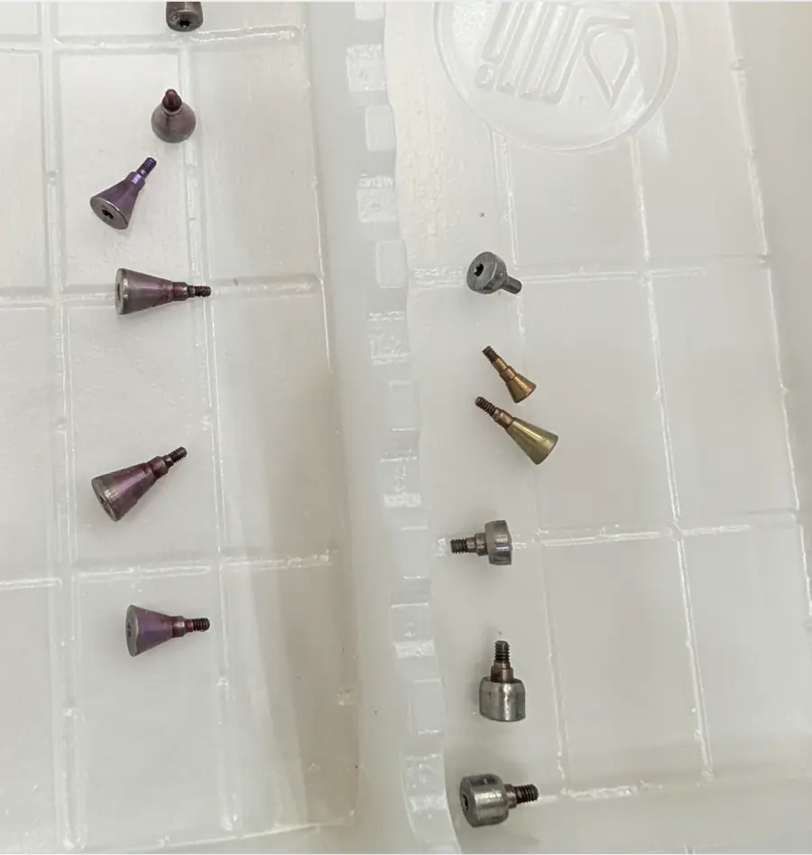

نسخه استخراجشده؛ ترجمه یا تأیید علمی انجام نشده است. وضعیت: captured
روکش روی اباتمنت قرار گرفته اما هنوز سمان نشده است، و در همین مرحله در حرکات باکولینگوالی بیثبات است. مشکل از لثه یا گیر بافت نرم نیست و کانتکتهای پروگزیمال مناسباند.
بنابراین مسئله صرفاً مکانیکی است: گیر و ثبات کافی در طراحی اباتمنت وجود ندارد.
قبل از سمان کردن، ثبات روکش در برابر نیروهای جانبی باید تست شود. اگر در این مرحله هر نوع حرکت جانبی یا چرخشی وجود داشته باشد، یعنی سیستم فاقد مقاومت مکانیکی کافی است.
پس از سمان، روکش ممکن است موقتاً ثابت به نظر برسد؛ اما با شروع عملکرد، بارهای جانبی به سمان منتقل میشوند، اتصال بهتدریج تخریب میشود و در نهایت debonding (از دست رفتن گیر) رخ میدهد.
ثبات باید قبل از سمان تأمین شود. روکشی که قبل از سمان حرکت دارد، با طراحی جدید اباتمنت و فضای سمان باید تکرار شود؛ وگرنه سمان در آینده قربانی یک طراحی مکانیکی نادرست خواهد شد.
باز کردن هیلینگها برای قالبگیری یا اسکن داخل دهانی، مرحلهای رایج اما ظریف است. وقتی تعداد ایمپلنتها زیاد باشد یا موقعیت بعضیها عمیقتر از بقیه باشد، همین مرحلهی ساده میتواند منبع درد و ناراحتی برای بیمار شود.

وقتی هیلینگ باز میشود، بافت لثهی اطرافش مثل یک زخم باز میماند. اگر هیلینگها جابهجا بسته شوند، مثلاً یک هیلینگ قطور در محل یک هیلینگ باریک، بیمار همان لحظه درد و فشار زیادی حس میکند؛ چون آن ناحیه از قبل با فرم خاص همان هیلینگ قبلی تطابق پیدا کرده بوده.
جزئیاتی ساده اما بسیار مؤثر: تفاوت واضحی در راحتی بیمار و کیفیت تجربهی کلینیکی، بدون هیچ ابزار یا تکنیک خاصی، فقط با نظم.
نوع سؤال: ساخت کلمه · 3 خانه
حروف منبع: ز · خ · م